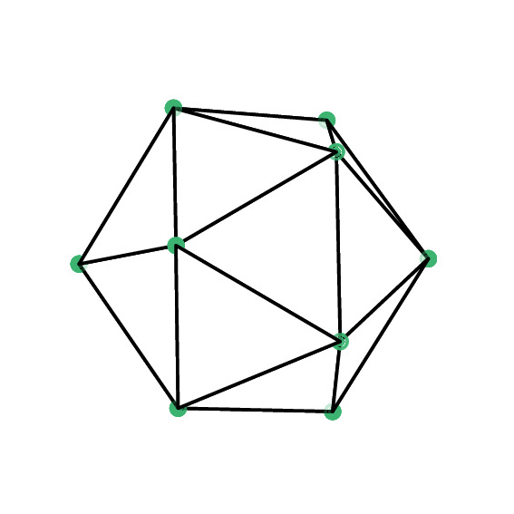

東京科学大学 情報理工学院
数理・計算科学系
研究員
学位 : 博士(情報学)
Email: koga.k.ac at m.titech.ac.jp
twitter
研究領域: 偏微分方程式の数値解法、流体力学、自由・移動境界問題、境界積分方程式、適応的メッシュ制御、数値積分公式、連続最適化、信号処理、計算調和解析学、GPU並列計算.
職歴:
- 東京科学大学（旧:東京工業大学） 情報理工学院 数理・計算科学系
- 2023年04月 - 現在 研究員 (受入: 荒井迅 教授)
- 京都大学 大学院理学研究科 数学・数理解析専攻
- 2021年04月 - 2023年03月 特定助教
- 2020年12月 - 2021年03月 特定研究員 (受入: 坂上貴之 教授)
- 2020年04月 - 2020年11月 教務補佐員 (受入: 坂上貴之 教授)
学位:
- 2020年 11月 京都大学 博士(情報学) [学位論文主査：青柳富誌生 教授]
- 2016年 03月 京都大学 修士(情報学)
- 2013年 03月 京都大学 学士(経済学)
- 2010年 03月 久留米工業高等専門学校 制御情報工学科 卒業
訪問研究:
出版リスト:
- 査読付学術論文
- K. Koga and J. Wilkening, Efficient discretization in space and time for axisymmetric vortex sheets with surface tension, in draft.
- K. Koga, Computing weak distance between the 2-sphere and its nonsmooth approximations, SIAM J. Sci. Comput., 46(1), A360-A375 (2024) [DOI, arxiv]
- K. Koga, Numerical reparametrization of periodic planar curves via curvature interpolation, SIAM J. Sci. Comput., 44(3), A1703-A1722 (2022) [DOI, arxiv]
- T. Uda, T. Sakajo, M. Inatsu and K. Koga, Identification of atmospheric blocking with morphological type by topological flow data analysis, J. Meteo. Soc. Japan vol., 99, 1169−1183 (2021) [DOI]
- K. Koga, Signal processing approach to mesh refinement in simulations of axisymmetric droplet dynamics, J. Comput. Appl. Math., 383, 113131 (2021) [DOI, arxiv]
- 査読付会議論文
- K. Koga and M. Funakoshi, Recent Progress in Simulations of 3D Vortex Sheets with
Surface Tension, In Mathematical Insights into Advanced Computer Graphics
Techniques, pp.119-129, Springer Singapore, 2019.
研究助成等:
- 科学技術振興機構 戦略的創造研究推進事業 さきがけ 「未来数理科学」領域
「幾何学的データの解析に向けた数理基盤」2025年10月 - 2029年3月
- 科学技術振興機構 戦略的創造研究推進事業 ACT-X 「数理・情報のフロンティア」領域
「計算調和解析学に基づく形状データ解析の深化」2021年10月 - 2025年3月
- 日本学術振興会 令和3年度 科学研究費助成事業 研究活動スタート支援
「流体界面シミュレーションにおけるメッシュ生成への信号処理的方法」2021年10月 - 2023年3月
- 京都大学 研究活動推進事業 令和3年度 若手研究者スタートアップ研究費(第I期), 2021年4月 - 2021年9月
- 日本学術振興会 平成30年度 若手研究者海外挑戦プログラム, 2018年7月 - 2018年12月
- 京都大学教育研究振興財団 平成28年度 国際研究集会発表助成・若手 (Ⅱ期), 2016年5月
担当科目:
- 京都大学
- 令和4年度後期 微分積分学（講義・演義）Ｂ、理学部・農学部、演義担当
- 令和4年度前期 数学研究のためのソフトウェア演習、理学研究科
- 令和4年度前期 微分積分学（講義・演義）Ａ、理学部・工学部、演義担当
- 令和3年度後期 微分積分学続論II－微分方程式、工学部
- 令和3年度後期 微分積分学（講義・演義）Ｂ、工学部、演義担当
- 令和3年度前期 微分積分学（講義・演義）Ａ、工学部、演義担当